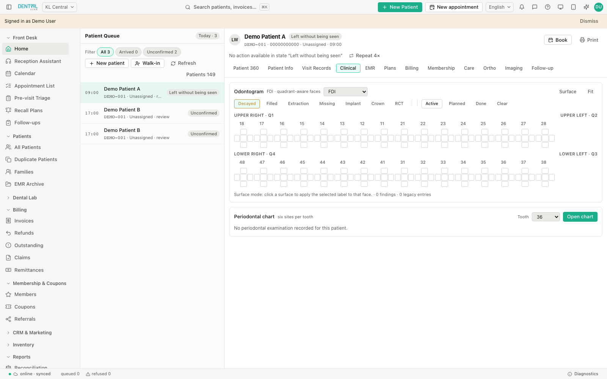
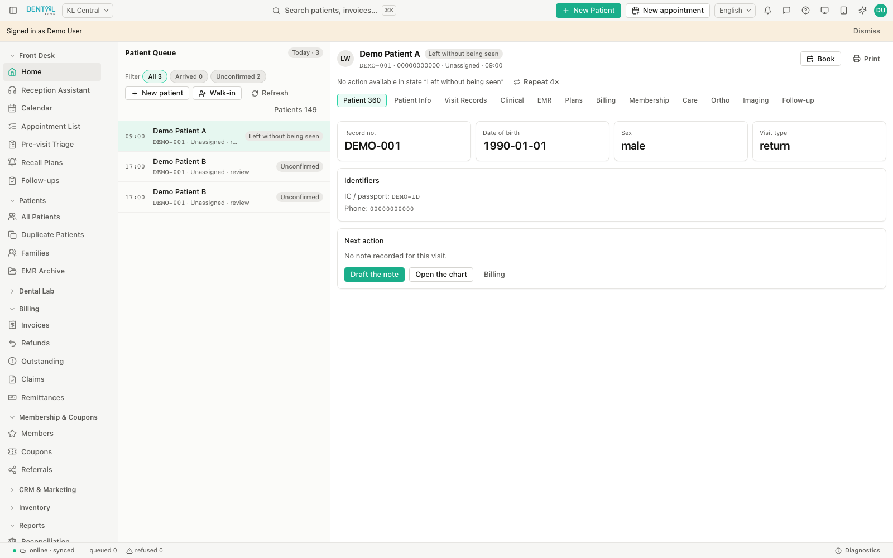

Make room for a better schedule.
Book appointments, manage walk-ins, assign chairs, and keep your patient queue moving with day, week, and month calendar views.
APPOINTMENTS & RECEPTION
One connected workspace for your dental clinic.
From the first
appointment to the final follow-up,
give your team more time for what matters.

Reception, the treatment room, and your accounts.
Finally
working from the same page.
Book appointments, manage walk-ins, assign chairs, and keep your patient queue moving with day, week, and month calendar views.
APPOINTMENTS & RECEPTIONBring patient details, visit history, clinical notes, treatment plans, and billing together in a connected Patient 360 workspace.
PATIENT MANAGEMENTDocument with dental and periodontal charts, template-based EMR notes, prescriptions, and treatment plans with consent tracking.
CLINICAL WORKSPACECreate invoices, record split payments, issue receipts, and follow outstanding balances. Prepare e-Invoice documents in the billing workflow.
BILLING & PAYMENTSGet help in the flow of your day. Find your way around DentalLink and prepare patient communication with an assistant built into your workspace.
Ask how to use DentalLink, understand a workflow, or get product help without leaving your workspace.
Prepare communication and marketing drafts for your team to review. Keep patient outreach personal and consistent.
Review drafts before use and approve messages before sending. Clinical decisions stay with your clinicians.
Start with Recall Plans. Generate follow-ups for patients who are due, then review the list with your reception team.
Product guidance · Recall workflowAI-generated responses require a configured model provider. Template drafts are available otherwise. Preview shown for illustration.
Help patients stay on track with their care. Bring recall plans, points, rewards, memberships, and family records into one connected experience.
Set recall intervals from the last completed visit, generate follow-ups for patients who are due, and give your team a clear list to work through.
Make consistent follow-up part of the routine.Track points earned and redeemed, referral and campaign points, and reward coupons. Keep a clear balance and movement history for each patient.
Keep every reward easy to understand.Manage membership tiers with their own pricing, discounts, and points multipliers. View a patient’s memberships and expiry dates alongside their record.
Build a loyalty programme around your practice.Link patients into family groups with a family head, member list, and shared address. Find related records while keeping each person’s clinical history separate.
Give your team the household context.Less chasing details. More lasting patient relationships.
Explore with a trial ↗
Purpose-built tools. Familiar workflows.
A workspace that
keeps the details together.

Clinic-owned records, role-based access, and an audit trail help your team work with accountability.
Offline caching and a queued outbox support continuity when the server is temporarily unreachable. Review queued changes as you reconnect.
English, Bahasa Malaysia, and Chinese interface options, local payment methods, and an e-Invoice preparation workflow. MyInvois submission requires configured credentials.
Create a trial account to explore the patient, appointment, clinical, and billing workflows for your practice.
Tell us about your current system when you contact our team. We’ll review available exports and discuss the migration scope and onboarding plan with you.
DentalLink includes an e-Invoice document preparation and validation workflow. Live MyInvois submission requires the clinic’s LHDN credentials and configuration.
The workstation can show cached records and queue supported writes during a temporary connection loss. Queued and refused changes are visible for review after reconnecting. Ask us to demonstrate the offline workflow for your setup.
Create a trial account and explore DentalLink’s connected workspace for your practice.
Start your trial ↗ Have a question? Chat with us ↗